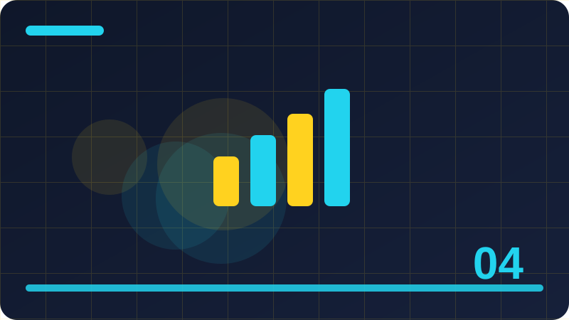

Chapter 4: Numbers and Maths

Section 1
This section looks closely at Integers in everyday code, one building block inside Numbers and Maths. It is worth slowing down here, because ideas that feel small at first often turn up again in much larger programs, and a clear understanding now will save you confusion later. Think of Integers in everyday code as a tool you are adding to a growing toolkit: you do not need to master every detail today, but you should know what it is for, when it helps, and what a sensible first example looks like. At its simplest, Integers in everyday code is about making your intention clear to both the computer and the next person who reads your code. The computer follows instructions literally, so vague thinking becomes a visible mistake, while clear thinking becomes a program that behaves as you expected. That is why examples in this section are deliberately small: with only a few lines to watch, you can see cause and effect without distraction, and you can trace exactly how each part contributes to the result. A short example is the best way to make Integers in everyday code concrete. Read the code slowly, line by line, and say what you think each line does before you run it. Then run it, compare the output with your prediction, and if they differ, treat that difference as useful information rather than a failure. Programmers learn more from a surprising result than from a result that merely confirms what they already believed, because surprise points to a gap in understanding. Beginners often stumble on Integers in everyday code for the same few reasons, and naming those reasons in advance makes them easier to avoid. One common problem is rushing past the example without running it, which leaves a fragile understanding that collapses at the first small change. Another is copying code without understanding it, which works until the copied code needs to be adapted. A third is changing several things at once, which makes it impossible to tell which change caused a new result. Beyond the first example, Integers in everyday code becomes useful when it is combined with ideas from earlier chapters. Programming is rarely about one idea in isolation; it is about combining small, reliable pieces into something larger. That is why this book returns to earlier ideas instead of leaving them behind. Each time you reuse an old idea in a new context, your understanding of both ideas deepens, and your programs become more flexible. To consolidate this section, try a tiny variation of the example before you continue. Change one value, one name, or one order, run the program again, and describe the difference in a sentence. That habit of deliberate variation is how programmers build intuition, and it takes only a few minutes. If you cannot explain the difference, you have found a useful question to investigate, and investigating it now will pay off in the next chapter.
print(10 + 5)Check: What is the main idea behind Integers in everyday code in your own words?
Section 2
Begin with Decimal numbers in code, and with the question it helps you answer while you are learning Numbers and Maths. Every new idea in programming earns its place by solving a real problem, not by sounding impressive, so this section starts from that problem. Once you can say in your own words why Decimal numbers in code exists, the details become much easier to remember, and the code you write afterwards tends to be clearer and more deliberate. The key to Decimal numbers in code is to connect the new idea with something you already understand. Programmers often explain a new concept by comparing it with an everyday action, such as sorting objects, following a recipe, or keeping a list, and that comparison helps at first. But an analogy is only a starting point: the section then moves from the everyday picture to the precise behaviour in Python, so that you are not misled when the real behaviour is slightly different from the picture. Work through the example for Decimal numbers in code as if you were the computer. Keep track of each value as it changes, and notice the order in which things happen, because order matters in programming far more than it does in ordinary writing. A line that looks harmless can change everything that follows, and a small change in order can turn a working program into one that behaves strangely. Tracing by hand is slow, but it builds the mental habit that makes debugging possible later. Watch out for the small details around Decimal numbers in code, because programming rewards attention to detail in a way that everyday language does not. A missing bracket, a misspelt name, or a value in the wrong place can stop a program or change its meaning, and the computer will not guess what you meant. This strictness can feel unfriendly at first, but it is also fair: the same code behaves the same way every time, so once you find a mistake, fixing it fixes the program reliably. Think about where Decimal numbers in code fits into a program you might actually want to write, such as a small tool, a game, a list manager, or a simple calculator. Real programs are built from the same building blocks you are learning here, repeated and combined in different ways. If you can picture a use for Decimal numbers in code outside this book, you are much more likely to remember it, and you will also start to notice it when you read other people's code. Before moving on, summarise Decimal numbers in code in two or three sentences of your own, without looking back at this section. Writing a summary forces you to decide what matters most, and it reveals gaps that silent reading can hide. If your summary feels vague, reread the example and try the variation exercise again. A short, accurate summary is a better sign of learning than a long page of notes copied from the text.
print(10 / 4)Check: When would you use Decimal numbers in code in a small program?
Section 3
In Numbers and Maths, Addition and subtraction is one of the ideas you will meet again and again, so it deserves a careful first look rather than a quick glance. This section explains the idea in plain language, shows a short example, and points out the mistakes that beginners most often make. You are not expected to memorise everything here; you are expected to recognise Addition and subtraction when you see it, to use it in a small program, and to know where to look when you need a reminder. When you meet Addition and subtraction, ask three questions before you write any code. First, what goes in? Second, what comes out? Third, what could go wrong if the input is empty, unusual, or not what you expected? Those three questions work for almost every topic in this book. They turn a passive reading exercise into an active investigation, and they prepare you to test your own code instead of hoping that it happens to be right. The example for Addition and subtraction is intentionally ordinary, because ordinary examples reveal the normal behaviour you will rely on every day. Fancy examples can impress, but they often hide the simple rule underneath layers of detail. Once the simple rule is clear, you can apply it to harder problems with confidence, and you will recognise the same rule when it appears inside a longer program written by someone else. As you practise Addition and subtraction, expect to make mistakes, and expect those mistakes to be informative. An error message is not a judgement on your ability; it is a clue, often pointing at the line where Python first noticed a problem. Read it, look at that line, and ask what Python expected to find there. Over time, you will start to recognise familiar messages and fix them quickly, which is one of the clearest signs that you are becoming a programmer. There is no single correct way to use Addition and subtraction in every situation, and part of learning programming is developing judgement about trade-offs. A shorter solution is not always clearer, and a more general solution is not always better for a small task. For now, favour the version that you can explain to someone else, because code that is easy to explain is usually easy to fix, easy to extend, and easy to trust. Finally, remember that Addition and subtraction is a step, not a destination. You will use it, forget parts of it, and relearn it in a richer context as your programs grow. That cycle is normal, and it is not a sign that you have failed to learn. Return to this section whenever you need it, use the idea in a real small program, and let repeated use turn a new idea into a familiar tool. If the result surprises you, read the code again slowly, as if you were explaining each line to a friend.
print(10 // 3)Check: What mistake are beginners most likely to make with Addition and subtraction?
Section 4
This section looks closely at Multiplication, one building block inside Numbers and Maths. It is worth slowing down here, because ideas that feel small at first often turn up again in much larger programs, and a clear understanding now will save you confusion later. Think of Multiplication as a tool you are adding to a growing toolkit: you do not need to master every detail today, but you should know what it is for, when it helps, and what a sensible first example looks like. At its simplest, Multiplication is about making your intention clear to both the computer and the next person who reads your code. The computer follows instructions literally, so vague thinking becomes a visible mistake, while clear thinking becomes a program that behaves as you expected. That is why examples in this section are deliberately small: with only a few lines to watch, you can see cause and effect without distraction, and you can trace exactly how each part contributes to the result. A short example is the best way to make Multiplication concrete. Read the code slowly, line by line, and say what you think each line does before you run it. Then run it, compare the output with your prediction, and if they differ, treat that difference as useful information rather than a failure. Programmers learn more from a surprising result than from a result that merely confirms what they already believed, because surprise points to a gap in understanding. Beginners often stumble on Multiplication for the same few reasons, and naming those reasons in advance makes them easier to avoid. One common problem is rushing past the example without running it, which leaves a fragile understanding that collapses at the first small change. Another is copying code without understanding it, which works until the copied code needs to be adapted. A third is changing several things at once, which makes it impossible to tell which change caused a new result. Beyond the first example, Multiplication becomes useful when it is combined with ideas from earlier chapters. Programming is rarely about one idea in isolation; it is about combining small, reliable pieces into something larger. That is why this book returns to earlier ideas instead of leaving them behind. Each time you reuse an old idea in a new context, your understanding of both ideas deepens, and your programs become more flexible. To consolidate this section, try a tiny variation of the example before you continue. Change one value, one name, or one order, run the program again, and describe the difference in a sentence. That habit of deliberate variation is how programmers build intuition, and it takes only a few minutes. If you cannot explain the difference, you have found a useful question to investigate, and investigating it now will pay off in the next chapter.
print(2 ** 3)Check: How would you explain Multiplication to a friend who has never coded?
Section 5
Begin with Division that keeps decimals, and with the question it helps you answer while you are learning Numbers and Maths. Every new idea in programming earns its place by solving a real problem, not by sounding impressive, so this section starts from that problem. Once you can say in your own words why Division that keeps decimals exists, the details become much easier to remember, and the code you write afterwards tends to be clearer and more deliberate. The key to Division that keeps decimals is to connect the new idea with something you already understand. Programmers often explain a new concept by comparing it with an everyday action, such as sorting objects, following a recipe, or keeping a list, and that comparison helps at first. But an analogy is only a starting point: the section then moves from the everyday picture to the precise behaviour in Python, so that you are not misled when the real behaviour is slightly different from the picture. Work through the example for Division that keeps decimals as if you were the computer. Keep track of each value as it changes, and notice the order in which things happen, because order matters in programming far more than it does in ordinary writing. A line that looks harmless can change everything that follows, and a small change in order can turn a working program into one that behaves strangely. Tracing by hand is slow, but it builds the mental habit that makes debugging possible later. Watch out for the small details around Division that keeps decimals, because programming rewards attention to detail in a way that everyday language does not. A missing bracket, a misspelt name, or a value in the wrong place can stop a program or change its meaning, and the computer will not guess what you meant. This strictness can feel unfriendly at first, but it is also fair: the same code behaves the same way every time, so once you find a mistake, fixing it fixes the program reliably. Think about where Division that keeps decimals fits into a program you might actually want to write, such as a small tool, a game, a list manager, or a simple calculator. Real programs are built from the same building blocks you are learning here, repeated and combined in different ways. If you can picture a use for Division that keeps decimals outside this book, you are much more likely to remember it, and you will also start to notice it when you read other people's code. Before moving on, summarise Division that keeps decimals in two or three sentences of your own, without looking back at this section. Writing a summary forces you to decide what matters most, and it reveals gaps that silent reading can hide. If your summary feels vague, reread the example and try the variation exercise again. A short, accurate summary is a better sign of learning than a long page of notes copied from the text.
print(7 % 3)Check: What would you change in the example to test Division that keeps decimals further?
Section 6
In Numbers and Maths, Whole-number division is one of the ideas you will meet again and again, so it deserves a careful first look rather than a quick glance. This section explains the idea in plain language, shows a short example, and points out the mistakes that beginners most often make. You are not expected to memorise everything here; you are expected to recognise Whole-number division when you see it, to use it in a small program, and to know where to look when you need a reminder. When you meet Whole-number division, ask three questions before you write any code. First, what goes in? Second, what comes out? Third, what could go wrong if the input is empty, unusual, or not what you expected? Those three questions work for almost every topic in this book. They turn a passive reading exercise into an active investigation, and they prepare you to test your own code instead of hoping that it happens to be right. The example for Whole-number division is intentionally ordinary, because ordinary examples reveal the normal behaviour you will rely on every day. Fancy examples can impress, but they often hide the simple rule underneath layers of detail. Once the simple rule is clear, you can apply it to harder problems with confidence, and you will recognise the same rule when it appears inside a longer program written by someone else. As you practise Whole-number division, expect to make mistakes, and expect those mistakes to be informative. An error message is not a judgement on your ability; it is a clue, often pointing at the line where Python first noticed a problem. Read it, look at that line, and ask what Python expected to find there. Over time, you will start to recognise familiar messages and fix them quickly, which is one of the clearest signs that you are becoming a programmer. There is no single correct way to use Whole-number division in every situation, and part of learning programming is developing judgement about trade-offs. A shorter solution is not always clearer, and a more general solution is not always better for a small task. For now, favour the version that you can explain to someone else, because code that is easy to explain is usually easy to fix, easy to extend, and easy to trust. Finally, remember that Whole-number division is a step, not a destination. You will use it, forget parts of it, and relearn it in a richer context as your programs grow. That cycle is normal, and it is not a sign that you have failed to learn. Return to this section whenever you need it, use the idea in a real small program, and let repeated use turn a new idea into a familiar tool. When you are stuck, shrink the problem until the smallest version works, then build it back up one step at a time.
print(10 + 5)Check: Why does Whole-number division matter for programs you want to build later?
Section 7
This section looks closely at Remainders, one building block inside Numbers and Maths. It is worth slowing down here, because ideas that feel small at first often turn up again in much larger programs, and a clear understanding now will save you confusion later. Think of Remainders as a tool you are adding to a growing toolkit: you do not need to master every detail today, but you should know what it is for, when it helps, and what a sensible first example looks like. At its simplest, Remainders is about making your intention clear to both the computer and the next person who reads your code. The computer follows instructions literally, so vague thinking becomes a visible mistake, while clear thinking becomes a program that behaves as you expected. That is why examples in this section are deliberately small: with only a few lines to watch, you can see cause and effect without distraction, and you can trace exactly how each part contributes to the result. A short example is the best way to make Remainders concrete. Read the code slowly, line by line, and say what you think each line does before you run it. Then run it, compare the output with your prediction, and if they differ, treat that difference as useful information rather than a failure. Programmers learn more from a surprising result than from a result that merely confirms what they already believed, because surprise points to a gap in understanding. Beginners often stumble on Remainders for the same few reasons, and naming those reasons in advance makes them easier to avoid. One common problem is rushing past the example without running it, which leaves a fragile understanding that collapses at the first small change. Another is copying code without understanding it, which works until the copied code needs to be adapted. A third is changing several things at once, which makes it impossible to tell which change caused a new result. Beyond the first example, Remainders becomes useful when it is combined with ideas from earlier chapters. Programming is rarely about one idea in isolation; it is about combining small, reliable pieces into something larger. That is why this book returns to earlier ideas instead of leaving them behind. Each time you reuse an old idea in a new context, your understanding of both ideas deepens, and your programs become more flexible. To consolidate this section, try a tiny variation of the example before you continue. Change one value, one name, or one order, run the program again, and describe the difference in a sentence. That habit of deliberate variation is how programmers build intuition, and it takes only a few minutes. If you cannot explain the difference, you have found a useful question to investigate, and investigating it now will pay off in the next chapter.
print(10 / 4)Check: What is the main idea behind Remainders in your own words?
Section 8
Begin with Powers, and with the question it helps you answer while you are learning Numbers and Maths. Every new idea in programming earns its place by solving a real problem, not by sounding impressive, so this section starts from that problem. Once you can say in your own words why Powers exists, the details become much easier to remember, and the code you write afterwards tends to be clearer and more deliberate. The key to Powers is to connect the new idea with something you already understand. Programmers often explain a new concept by comparing it with an everyday action, such as sorting objects, following a recipe, or keeping a list, and that comparison helps at first. But an analogy is only a starting point: the section then moves from the everyday picture to the precise behaviour in Python, so that you are not misled when the real behaviour is slightly different from the picture. Work through the example for Powers as if you were the computer. Keep track of each value as it changes, and notice the order in which things happen, because order matters in programming far more than it does in ordinary writing. A line that looks harmless can change everything that follows, and a small change in order can turn a working program into one that behaves strangely. Tracing by hand is slow, but it builds the mental habit that makes debugging possible later. Watch out for the small details around Powers, because programming rewards attention to detail in a way that everyday language does not. A missing bracket, a misspelt name, or a value in the wrong place can stop a program or change its meaning, and the computer will not guess what you meant. This strictness can feel unfriendly at first, but it is also fair: the same code behaves the same way every time, so once you find a mistake, fixing it fixes the program reliably. Think about where Powers fits into a program you might actually want to write, such as a small tool, a game, a list manager, or a simple calculator. Real programs are built from the same building blocks you are learning here, repeated and combined in different ways. If you can picture a use for Powers outside this book, you are much more likely to remember it, and you will also start to notice it when you read other people's code. Before moving on, summarise Powers in two or three sentences of your own, without looking back at this section. Writing a summary forces you to decide what matters most, and it reveals gaps that silent reading can hide. If your summary feels vague, reread the example and try the variation exercise again. A short, accurate summary is a better sign of learning than a long page of notes copied from the text.
print(10 // 3)Check: When would you use Powers in a small program?
Section 9
In Numbers and Maths, Order of operations is one of the ideas you will meet again and again, so it deserves a careful first look rather than a quick glance. This section explains the idea in plain language, shows a short example, and points out the mistakes that beginners most often make. You are not expected to memorise everything here; you are expected to recognise Order of operations when you see it, to use it in a small program, and to know where to look when you need a reminder. When you meet Order of operations, ask three questions before you write any code. First, what goes in? Second, what comes out? Third, what could go wrong if the input is empty, unusual, or not what you expected? Those three questions work for almost every topic in this book. They turn a passive reading exercise into an active investigation, and they prepare you to test your own code instead of hoping that it happens to be right. The example for Order of operations is intentionally ordinary, because ordinary examples reveal the normal behaviour you will rely on every day. Fancy examples can impress, but they often hide the simple rule underneath layers of detail. Once the simple rule is clear, you can apply it to harder problems with confidence, and you will recognise the same rule when it appears inside a longer program written by someone else. As you practise Order of operations, expect to make mistakes, and expect those mistakes to be informative. An error message is not a judgement on your ability; it is a clue, often pointing at the line where Python first noticed a problem. Read it, look at that line, and ask what Python expected to find there. Over time, you will start to recognise familiar messages and fix them quickly, which is one of the clearest signs that you are becoming a programmer. There is no single correct way to use Order of operations in every situation, and part of learning programming is developing judgement about trade-offs. A shorter solution is not always clearer, and a more general solution is not always better for a small task. For now, favour the version that you can explain to someone else, because code that is easy to explain is usually easy to fix, easy to extend, and easy to trust. Finally, remember that Order of operations is a step, not a destination. You will use it, forget parts of it, and relearn it in a richer context as your programs grow. That cycle is normal, and it is not a sign that you have failed to learn. Return to this section whenever you need it, use the idea in a real small program, and let repeated use turn a new idea into a familiar tool. Try it on paper first, then in code, and compare what you predicted with what actually happens before you move on.
print(2 ** 3)Check: What mistake are beginners most likely to make with Order of operations?
Section 10
This section looks closely at Brackets change the result, one building block inside Numbers and Maths. It is worth slowing down here, because ideas that feel small at first often turn up again in much larger programs, and a clear understanding now will save you confusion later. Think of Brackets change the result as a tool you are adding to a growing toolkit: you do not need to master every detail today, but you should know what it is for, when it helps, and what a sensible first example looks like. At its simplest, Brackets change the result is about making your intention clear to both the computer and the next person who reads your code. The computer follows instructions literally, so vague thinking becomes a visible mistake, while clear thinking becomes a program that behaves as you expected. That is why examples in this section are deliberately small: with only a few lines to watch, you can see cause and effect without distraction, and you can trace exactly how each part contributes to the result. A short example is the best way to make Brackets change the result concrete. Read the code slowly, line by line, and say what you think each line does before you run it. Then run it, compare the output with your prediction, and if they differ, treat that difference as useful information rather than a failure. Programmers learn more from a surprising result than from a result that merely confirms what they already believed, because surprise points to a gap in understanding. Beginners often stumble on Brackets change the result for the same few reasons, and naming those reasons in advance makes them easier to avoid. One common problem is rushing past the example without running it, which leaves a fragile understanding that collapses at the first small change. Another is copying code without understanding it, which works until the copied code needs to be adapted. A third is changing several things at once, which makes it impossible to tell which change caused a new result. Beyond the first example, Brackets change the result becomes useful when it is combined with ideas from earlier chapters. Programming is rarely about one idea in isolation; it is about combining small, reliable pieces into something larger. That is why this book returns to earlier ideas instead of leaving them behind. Each time you reuse an old idea in a new context, your understanding of both ideas deepens, and your programs become more flexible. To consolidate this section, try a tiny variation of the example before you continue. Change one value, one name, or one order, run the program again, and describe the difference in a sentence. That habit of deliberate variation is how programmers build intuition, and it takes only a few minutes. If you cannot explain the difference, you have found a useful question to investigate, and investigating it now will pay off in the next chapter.
print(7 % 3)Check: How would you explain Brackets change the result to a friend who has never coded?
Section 11
Begin with Rounding numbers, and with the question it helps you answer while you are learning Numbers and Maths. Every new idea in programming earns its place by solving a real problem, not by sounding impressive, so this section starts from that problem. Once you can say in your own words why Rounding numbers exists, the details become much easier to remember, and the code you write afterwards tends to be clearer and more deliberate. The key to Rounding numbers is to connect the new idea with something you already understand. Programmers often explain a new concept by comparing it with an everyday action, such as sorting objects, following a recipe, or keeping a list, and that comparison helps at first. But an analogy is only a starting point: the section then moves from the everyday picture to the precise behaviour in Python, so that you are not misled when the real behaviour is slightly different from the picture. Work through the example for Rounding numbers as if you were the computer. Keep track of each value as it changes, and notice the order in which things happen, because order matters in programming far more than it does in ordinary writing. A line that looks harmless can change everything that follows, and a small change in order can turn a working program into one that behaves strangely. Tracing by hand is slow, but it builds the mental habit that makes debugging possible later. Watch out for the small details around Rounding numbers, because programming rewards attention to detail in a way that everyday language does not. A missing bracket, a misspelt name, or a value in the wrong place can stop a program or change its meaning, and the computer will not guess what you meant. This strictness can feel unfriendly at first, but it is also fair: the same code behaves the same way every time, so once you find a mistake, fixing it fixes the program reliably. Think about where Rounding numbers fits into a program you might actually want to write, such as a small tool, a game, a list manager, or a simple calculator. Real programs are built from the same building blocks you are learning here, repeated and combined in different ways. If you can picture a use for Rounding numbers outside this book, you are much more likely to remember it, and you will also start to notice it when you read other people's code. Before moving on, summarise Rounding numbers in two or three sentences of your own, without looking back at this section. Writing a summary forces you to decide what matters most, and it reveals gaps that silent reading can hide. If your summary feels vague, reread the example and try the variation exercise again. A short, accurate summary is a better sign of learning than a long page of notes copied from the text.
print(10 + 5)Check: What would you change in the example to test Rounding numbers further?
Section 12
In Numbers and Maths, Rounding down and up is one of the ideas you will meet again and again, so it deserves a careful first look rather than a quick glance. This section explains the idea in plain language, shows a short example, and points out the mistakes that beginners most often make. You are not expected to memorise everything here; you are expected to recognise Rounding down and up when you see it, to use it in a small program, and to know where to look when you need a reminder. When you meet Rounding down and up, ask three questions before you write any code. First, what goes in? Second, what comes out? Third, what could go wrong if the input is empty, unusual, or not what you expected? Those three questions work for almost every topic in this book. They turn a passive reading exercise into an active investigation, and they prepare you to test your own code instead of hoping that it happens to be right. The example for Rounding down and up is intentionally ordinary, because ordinary examples reveal the normal behaviour you will rely on every day. Fancy examples can impress, but they often hide the simple rule underneath layers of detail. Once the simple rule is clear, you can apply it to harder problems with confidence, and you will recognise the same rule when it appears inside a longer program written by someone else. As you practise Rounding down and up, expect to make mistakes, and expect those mistakes to be informative. An error message is not a judgement on your ability; it is a clue, often pointing at the line where Python first noticed a problem. Read it, look at that line, and ask what Python expected to find there. Over time, you will start to recognise familiar messages and fix them quickly, which is one of the clearest signs that you are becoming a programmer. There is no single correct way to use Rounding down and up in every situation, and part of learning programming is developing judgement about trade-offs. A shorter solution is not always clearer, and a more general solution is not always better for a small task. For now, favour the version that you can explain to someone else, because code that is easy to explain is usually easy to fix, easy to extend, and easy to trust. Finally, remember that Rounding down and up is a step, not a destination. You will use it, forget parts of it, and relearn it in a richer context as your programs grow. That cycle is normal, and it is not a sign that you have failed to learn. Return to this section whenever you need it, use the idea in a real small program, and let repeated use turn a new idea into a familiar tool.
print(10 / 4)Check: Why does Rounding down and up matter for programs you want to build later?
Section 13
This section looks closely at Absolute values, one building block inside Numbers and Maths. It is worth slowing down here, because ideas that feel small at first often turn up again in much larger programs, and a clear understanding now will save you confusion later. Think of Absolute values as a tool you are adding to a growing toolkit: you do not need to master every detail today, but you should know what it is for, when it helps, and what a sensible first example looks like. At its simplest, Absolute values is about making your intention clear to both the computer and the next person who reads your code. The computer follows instructions literally, so vague thinking becomes a visible mistake, while clear thinking becomes a program that behaves as you expected. That is why examples in this section are deliberately small: with only a few lines to watch, you can see cause and effect without distraction, and you can trace exactly how each part contributes to the result. A short example is the best way to make Absolute values concrete. Read the code slowly, line by line, and say what you think each line does before you run it. Then run it, compare the output with your prediction, and if they differ, treat that difference as useful information rather than a failure. Programmers learn more from a surprising result than from a result that merely confirms what they already believed, because surprise points to a gap in understanding. Beginners often stumble on Absolute values for the same few reasons, and naming those reasons in advance makes them easier to avoid. One common problem is rushing past the example without running it, which leaves a fragile understanding that collapses at the first small change. Another is copying code without understanding it, which works until the copied code needs to be adapted. A third is changing several things at once, which makes it impossible to tell which change caused a new result. Beyond the first example, Absolute values becomes useful when it is combined with ideas from earlier chapters. Programming is rarely about one idea in isolation; it is about combining small, reliable pieces into something larger. That is why this book returns to earlier ideas instead of leaving them behind. Each time you reuse an old idea in a new context, your understanding of both ideas deepens, and your programs become more flexible. To consolidate this section, try a tiny variation of the example before you continue. Change one value, one name, or one order, run the program again, and describe the difference in a sentence. That habit of deliberate variation is how programmers build intuition, and it takes only a few minutes. If you cannot explain the difference, you have found a useful question to investigate, and investigating it now will pay off in the next chapter.
print(10 // 3)Check: What is the main idea behind Absolute values in your own words?
Section 14
Begin with Minimum and maximum, and with the question it helps you answer while you are learning Numbers and Maths. Every new idea in programming earns its place by solving a real problem, not by sounding impressive, so this section starts from that problem. Once you can say in your own words why Minimum and maximum exists, the details become much easier to remember, and the code you write afterwards tends to be clearer and more deliberate. The key to Minimum and maximum is to connect the new idea with something you already understand. Programmers often explain a new concept by comparing it with an everyday action, such as sorting objects, following a recipe, or keeping a list, and that comparison helps at first. But an analogy is only a starting point: the section then moves from the everyday picture to the precise behaviour in Python, so that you are not misled when the real behaviour is slightly different from the picture. Work through the example for Minimum and maximum as if you were the computer. Keep track of each value as it changes, and notice the order in which things happen, because order matters in programming far more than it does in ordinary writing. A line that looks harmless can change everything that follows, and a small change in order can turn a working program into one that behaves strangely. Tracing by hand is slow, but it builds the mental habit that makes debugging possible later. Watch out for the small details around Minimum and maximum, because programming rewards attention to detail in a way that everyday language does not. A missing bracket, a misspelt name, or a value in the wrong place can stop a program or change its meaning, and the computer will not guess what you meant. This strictness can feel unfriendly at first, but it is also fair: the same code behaves the same way every time, so once you find a mistake, fixing it fixes the program reliably. Think about where Minimum and maximum fits into a program you might actually want to write, such as a small tool, a game, a list manager, or a simple calculator. Real programs are built from the same building blocks you are learning here, repeated and combined in different ways. If you can picture a use for Minimum and maximum outside this book, you are much more likely to remember it, and you will also start to notice it when you read other people's code. Before moving on, summarise Minimum and maximum in two or three sentences of your own, without looking back at this section. Writing a summary forces you to decide what matters most, and it reveals gaps that silent reading can hide. If your summary feels vague, reread the example and try the variation exercise again. A short, accurate summary is a better sign of learning than a long page of notes copied from the text.
print(2 ** 3)Check: When would you use Minimum and maximum in a small program?
Section 15
In Numbers and Maths, Adding numbers from input is one of the ideas you will meet again and again, so it deserves a careful first look rather than a quick glance. This section explains the idea in plain language, shows a short example, and points out the mistakes that beginners most often make. You are not expected to memorise everything here; you are expected to recognise Adding numbers from input when you see it, to use it in a small program, and to know where to look when you need a reminder. When you meet Adding numbers from input, ask three questions before you write any code. First, what goes in? Second, what comes out? Third, what could go wrong if the input is empty, unusual, or not what you expected? Those three questions work for almost every topic in this book. They turn a passive reading exercise into an active investigation, and they prepare you to test your own code instead of hoping that it happens to be right. The example for Adding numbers from input is intentionally ordinary, because ordinary examples reveal the normal behaviour you will rely on every day. Fancy examples can impress, but they often hide the simple rule underneath layers of detail. Once the simple rule is clear, you can apply it to harder problems with confidence, and you will recognise the same rule when it appears inside a longer program written by someone else. As you practise Adding numbers from input, expect to make mistakes, and expect those mistakes to be informative. An error message is not a judgement on your ability; it is a clue, often pointing at the line where Python first noticed a problem. Read it, look at that line, and ask what Python expected to find there. Over time, you will start to recognise familiar messages and fix them quickly, which is one of the clearest signs that you are becoming a programmer. There is no single correct way to use Adding numbers from input in every situation, and part of learning programming is developing judgement about trade-offs. A shorter solution is not always clearer, and a more general solution is not always better for a small task. For now, favour the version that you can explain to someone else, because code that is easy to explain is usually easy to fix, easy to extend, and easy to trust. Finally, remember that Adding numbers from input is a step, not a destination. You will use it, forget parts of it, and relearn it in a richer context as your programs grow. That cycle is normal, and it is not a sign that you have failed to learn. Return to this section whenever you need it, use the idea in a real small program, and let repeated use turn a new idea into a familiar tool.
print(7 % 3)Check: What mistake are beginners most likely to make with Adding numbers from input?
Section 16
This section looks closely at Converting text to numbers safely, one building block inside Numbers and Maths. It is worth slowing down here, because ideas that feel small at first often turn up again in much larger programs, and a clear understanding now will save you confusion later. Think of Converting text to numbers safely as a tool you are adding to a growing toolkit: you do not need to master every detail today, but you should know what it is for, when it helps, and what a sensible first example looks like. At its simplest, Converting text to numbers safely is about making your intention clear to both the computer and the next person who reads your code. The computer follows instructions literally, so vague thinking becomes a visible mistake, while clear thinking becomes a program that behaves as you expected. That is why examples in this section are deliberately small: with only a few lines to watch, you can see cause and effect without distraction, and you can trace exactly how each part contributes to the result. A short example is the best way to make Converting text to numbers safely concrete. Read the code slowly, line by line, and say what you think each line does before you run it. Then run it, compare the output with your prediction, and if they differ, treat that difference as useful information rather than a failure. Programmers learn more from a surprising result than from a result that merely confirms what they already believed, because surprise points to a gap in understanding. Beginners often stumble on Converting text to numbers safely for the same few reasons, and naming those reasons in advance makes them easier to avoid. One common problem is rushing past the example without running it, which leaves a fragile understanding that collapses at the first small change. Another is copying code without understanding it, which works until the copied code needs to be adapted. A third is changing several things at once, which makes it impossible to tell which change caused a new result. Beyond the first example, Converting text to numbers safely becomes useful when it is combined with ideas from earlier chapters. Programming is rarely about one idea in isolation; it is about combining small, reliable pieces into something larger. That is why this book returns to earlier ideas instead of leaving them behind. Each time you reuse an old idea in a new context, your understanding of both ideas deepens, and your programs become more flexible. To consolidate this section, try a tiny variation of the example before you continue. Change one value, one name, or one order, run the program again, and describe the difference in a sentence. That habit of deliberate variation is how programmers build intuition, and it takes only a few minutes. If you cannot explain the difference, you have found a useful question to investigate, and investigating it now will pay off in the next chapter.
print(10 + 5)Check: How would you explain Converting text to numbers safely to a friend who has never coded?
Section 17
Begin with Averages, and with the question it helps you answer while you are learning Numbers and Maths. Every new idea in programming earns its place by solving a real problem, not by sounding impressive, so this section starts from that problem. Once you can say in your own words why Averages exists, the details become much easier to remember, and the code you write afterwards tends to be clearer and more deliberate. The key to Averages is to connect the new idea with something you already understand. Programmers often explain a new concept by comparing it with an everyday action, such as sorting objects, following a recipe, or keeping a list, and that comparison helps at first. But an analogy is only a starting point: the section then moves from the everyday picture to the precise behaviour in Python, so that you are not misled when the real behaviour is slightly different from the picture. Work through the example for Averages as if you were the computer. Keep track of each value as it changes, and notice the order in which things happen, because order matters in programming far more than it does in ordinary writing. A line that looks harmless can change everything that follows, and a small change in order can turn a working program into one that behaves strangely. Tracing by hand is slow, but it builds the mental habit that makes debugging possible later. Watch out for the small details around Averages, because programming rewards attention to detail in a way that everyday language does not. A missing bracket, a misspelt name, or a value in the wrong place can stop a program or change its meaning, and the computer will not guess what you meant. This strictness can feel unfriendly at first, but it is also fair: the same code behaves the same way every time, so once you find a mistake, fixing it fixes the program reliably. Think about where Averages fits into a program you might actually want to write, such as a small tool, a game, a list manager, or a simple calculator. Real programs are built from the same building blocks you are learning here, repeated and combined in different ways. If you can picture a use for Averages outside this book, you are much more likely to remember it, and you will also start to notice it when you read other people's code. Before moving on, summarise Averages in two or three sentences of your own, without looking back at this section. Writing a summary forces you to decide what matters most, and it reveals gaps that silent reading can hide. If your summary feels vague, reread the example and try the variation exercise again. A short, accurate summary is a better sign of learning than a long page of notes copied from the text.
print(10 / 4)Check: What would you change in the example to test Averages further?
Section 18
In Numbers and Maths, Percentages is one of the ideas you will meet again and again, so it deserves a careful first look rather than a quick glance. This section explains the idea in plain language, shows a short example, and points out the mistakes that beginners most often make. You are not expected to memorise everything here; you are expected to recognise Percentages when you see it, to use it in a small program, and to know where to look when you need a reminder. When you meet Percentages, ask three questions before you write any code. First, what goes in? Second, what comes out? Third, what could go wrong if the input is empty, unusual, or not what you expected? Those three questions work for almost every topic in this book. They turn a passive reading exercise into an active investigation, and they prepare you to test your own code instead of hoping that it happens to be right. The example for Percentages is intentionally ordinary, because ordinary examples reveal the normal behaviour you will rely on every day. Fancy examples can impress, but they often hide the simple rule underneath layers of detail. Once the simple rule is clear, you can apply it to harder problems with confidence, and you will recognise the same rule when it appears inside a longer program written by someone else. As you practise Percentages, expect to make mistakes, and expect those mistakes to be informative. An error message is not a judgement on your ability; it is a clue, often pointing at the line where Python first noticed a problem. Read it, look at that line, and ask what Python expected to find there. Over time, you will start to recognise familiar messages and fix them quickly, which is one of the clearest signs that you are becoming a programmer. There is no single correct way to use Percentages in every situation, and part of learning programming is developing judgement about trade-offs. A shorter solution is not always clearer, and a more general solution is not always better for a small task. For now, favour the version that you can explain to someone else, because code that is easy to explain is usually easy to fix, easy to extend, and easy to trust. Finally, remember that Percentages is a step, not a destination. You will use it, forget parts of it, and relearn it in a richer context as your programs grow. That cycle is normal, and it is not a sign that you have failed to learn. Return to this section whenever you need it, use the idea in a real small program, and let repeated use turn a new idea into a familiar tool. Small experiments teach more than long explanations, so change one thing at a time and watch the result carefully.
print(10 // 3)Check: Why does Percentages matter for programs you want to build later?
Section 19
This section looks closely at Working with money carefully, one building block inside Numbers and Maths. It is worth slowing down here, because ideas that feel small at first often turn up again in much larger programs, and a clear understanding now will save you confusion later. Think of Working with money carefully as a tool you are adding to a growing toolkit: you do not need to master every detail today, but you should know what it is for, when it helps, and what a sensible first example looks like. At its simplest, Working with money carefully is about making your intention clear to both the computer and the next person who reads your code. The computer follows instructions literally, so vague thinking becomes a visible mistake, while clear thinking becomes a program that behaves as you expected. That is why examples in this section are deliberately small: with only a few lines to watch, you can see cause and effect without distraction, and you can trace exactly how each part contributes to the result. A short example is the best way to make Working with money carefully concrete. Read the code slowly, line by line, and say what you think each line does before you run it. Then run it, compare the output with your prediction, and if they differ, treat that difference as useful information rather than a failure. Programmers learn more from a surprising result than from a result that merely confirms what they already believed, because surprise points to a gap in understanding. Beginners often stumble on Working with money carefully for the same few reasons, and naming those reasons in advance makes them easier to avoid. One common problem is rushing past the example without running it, which leaves a fragile understanding that collapses at the first small change. Another is copying code without understanding it, which works until the copied code needs to be adapted. A third is changing several things at once, which makes it impossible to tell which change caused a new result. Beyond the first example, Working with money carefully becomes useful when it is combined with ideas from earlier chapters. Programming is rarely about one idea in isolation; it is about combining small, reliable pieces into something larger. That is why this book returns to earlier ideas instead of leaving them behind. Each time you reuse an old idea in a new context, your understanding of both ideas deepens, and your programs become more flexible. To consolidate this section, try a tiny variation of the example before you continue. Change one value, one name, or one order, run the program again, and describe the difference in a sentence. That habit of deliberate variation is how programmers build intuition, and it takes only a few minutes. If you cannot explain the difference, you have found a useful question to investigate, and investigating it now will pay off in the next chapter.
print(2 ** 3)Check: What is the main idea behind Working with money carefully in your own words?
Section 20
Begin with Counting in steps, and with the question it helps you answer while you are learning Numbers and Maths. Every new idea in programming earns its place by solving a real problem, not by sounding impressive, so this section starts from that problem. Once you can say in your own words why Counting in steps exists, the details become much easier to remember, and the code you write afterwards tends to be clearer and more deliberate. The key to Counting in steps is to connect the new idea with something you already understand. Programmers often explain a new concept by comparing it with an everyday action, such as sorting objects, following a recipe, or keeping a list, and that comparison helps at first. But an analogy is only a starting point: the section then moves from the everyday picture to the precise behaviour in Python, so that you are not misled when the real behaviour is slightly different from the picture. Work through the example for Counting in steps as if you were the computer. Keep track of each value as it changes, and notice the order in which things happen, because order matters in programming far more than it does in ordinary writing. A line that looks harmless can change everything that follows, and a small change in order can turn a working program into one that behaves strangely. Tracing by hand is slow, but it builds the mental habit that makes debugging possible later. Watch out for the small details around Counting in steps, because programming rewards attention to detail in a way that everyday language does not. A missing bracket, a misspelt name, or a value in the wrong place can stop a program or change its meaning, and the computer will not guess what you meant. This strictness can feel unfriendly at first, but it is also fair: the same code behaves the same way every time, so once you find a mistake, fixing it fixes the program reliably. Think about where Counting in steps fits into a program you might actually want to write, such as a small tool, a game, a list manager, or a simple calculator. Real programs are built from the same building blocks you are learning here, repeated and combined in different ways. If you can picture a use for Counting in steps outside this book, you are much more likely to remember it, and you will also start to notice it when you read other people's code. Before moving on, summarise Counting in steps in two or three sentences of your own, without looking back at this section. Writing a summary forces you to decide what matters most, and it reveals gaps that silent reading can hide. If your summary feels vague, reread the example and try the variation exercise again. A short, accurate summary is a better sign of learning than a long page of notes copied from the text.
print(7 % 3)Check: When would you use Counting in steps in a small program?
Section 21
In Numbers and Maths, Even and odd numbers is one of the ideas you will meet again and again, so it deserves a careful first look rather than a quick glance. This section explains the idea in plain language, shows a short example, and points out the mistakes that beginners most often make. You are not expected to memorise everything here; you are expected to recognise Even and odd numbers when you see it, to use it in a small program, and to know where to look when you need a reminder. When you meet Even and odd numbers, ask three questions before you write any code. First, what goes in? Second, what comes out? Third, what could go wrong if the input is empty, unusual, or not what you expected? Those three questions work for almost every topic in this book. They turn a passive reading exercise into an active investigation, and they prepare you to test your own code instead of hoping that it happens to be right. The example for Even and odd numbers is intentionally ordinary, because ordinary examples reveal the normal behaviour you will rely on every day. Fancy examples can impress, but they often hide the simple rule underneath layers of detail. Once the simple rule is clear, you can apply it to harder problems with confidence, and you will recognise the same rule when it appears inside a longer program written by someone else. As you practise Even and odd numbers, expect to make mistakes, and expect those mistakes to be informative. An error message is not a judgement on your ability; it is a clue, often pointing at the line where Python first noticed a problem. Read it, look at that line, and ask what Python expected to find there. Over time, you will start to recognise familiar messages and fix them quickly, which is one of the clearest signs that you are becoming a programmer. There is no single correct way to use Even and odd numbers in every situation, and part of learning programming is developing judgement about trade-offs. A shorter solution is not always clearer, and a more general solution is not always better for a small task. For now, favour the version that you can explain to someone else, because code that is easy to explain is usually easy to fix, easy to extend, and easy to trust. Finally, remember that Even and odd numbers is a step, not a destination. You will use it, forget parts of it, and relearn it in a richer context as your programs grow. That cycle is normal, and it is not a sign that you have failed to learn. Return to this section whenever you need it, use the idea in a real small program, and let repeated use turn a new idea into a familiar tool.
print(10 + 5)Check: What mistake are beginners most likely to make with Even and odd numbers?
Section 22
This section looks closely at Checking divisibility, one building block inside Numbers and Maths. It is worth slowing down here, because ideas that feel small at first often turn up again in much larger programs, and a clear understanding now will save you confusion later. Think of Checking divisibility as a tool you are adding to a growing toolkit: you do not need to master every detail today, but you should know what it is for, when it helps, and what a sensible first example looks like. At its simplest, Checking divisibility is about making your intention clear to both the computer and the next person who reads your code. The computer follows instructions literally, so vague thinking becomes a visible mistake, while clear thinking becomes a program that behaves as you expected. That is why examples in this section are deliberately small: with only a few lines to watch, you can see cause and effect without distraction, and you can trace exactly how each part contributes to the result. A short example is the best way to make Checking divisibility concrete. Read the code slowly, line by line, and say what you think each line does before you run it. Then run it, compare the output with your prediction, and if they differ, treat that difference as useful information rather than a failure. Programmers learn more from a surprising result than from a result that merely confirms what they already believed, because surprise points to a gap in understanding. Beginners often stumble on Checking divisibility for the same few reasons, and naming those reasons in advance makes them easier to avoid. One common problem is rushing past the example without running it, which leaves a fragile understanding that collapses at the first small change. Another is copying code without understanding it, which works until the copied code needs to be adapted. A third is changing several things at once, which makes it impossible to tell which change caused a new result. Beyond the first example, Checking divisibility becomes useful when it is combined with ideas from earlier chapters. Programming is rarely about one idea in isolation; it is about combining small, reliable pieces into something larger. That is why this book returns to earlier ideas instead of leaving them behind. Each time you reuse an old idea in a new context, your understanding of both ideas deepens, and your programs become more flexible. To consolidate this section, try a tiny variation of the example before you continue. Change one value, one name, or one order, run the program again, and describe the difference in a sentence. That habit of deliberate variation is how programmers build intuition, and it takes only a few minutes. If you cannot explain the difference, you have found a useful question to investigate, and investigating it now will pay off in the next chapter.
print(10 / 4)Check: How would you explain Checking divisibility to a friend who has never coded?
Section 23
Begin with Random numbers in a range, and with the question it helps you answer while you are learning Numbers and Maths. Every new idea in programming earns its place by solving a real problem, not by sounding impressive, so this section starts from that problem. Once you can say in your own words why Random numbers in a range exists, the details become much easier to remember, and the code you write afterwards tends to be clearer and more deliberate. The key to Random numbers in a range is to connect the new idea with something you already understand. Programmers often explain a new concept by comparing it with an everyday action, such as sorting objects, following a recipe, or keeping a list, and that comparison helps at first. But an analogy is only a starting point: the section then moves from the everyday picture to the precise behaviour in Python, so that you are not misled when the real behaviour is slightly different from the picture. Work through the example for Random numbers in a range as if you were the computer. Keep track of each value as it changes, and notice the order in which things happen, because order matters in programming far more than it does in ordinary writing. A line that looks harmless can change everything that follows, and a small change in order can turn a working program into one that behaves strangely. Tracing by hand is slow, but it builds the mental habit that makes debugging possible later. Watch out for the small details around Random numbers in a range, because programming rewards attention to detail in a way that everyday language does not. A missing bracket, a misspelt name, or a value in the wrong place can stop a program or change its meaning, and the computer will not guess what you meant. This strictness can feel unfriendly at first, but it is also fair: the same code behaves the same way every time, so once you find a mistake, fixing it fixes the program reliably. Think about where Random numbers in a range fits into a program you might actually want to write, such as a small tool, a game, a list manager, or a simple calculator. Real programs are built from the same building blocks you are learning here, repeated and combined in different ways. If you can picture a use for Random numbers in a range outside this book, you are much more likely to remember it, and you will also start to notice it when you read other people's code. Before moving on, summarise Random numbers in a range in two or three sentences of your own, without looking back at this section. Writing a summary forces you to decide what matters most, and it reveals gaps that silent reading can hide. If your summary feels vague, reread the example and try the variation exercise again.
print(10 // 3)Check: What would you change in the example to test Random numbers in a range further?
Section 24
In Numbers and Maths, Seeds and repeatability is one of the ideas you will meet again and again, so it deserves a careful first look rather than a quick glance. This section explains the idea in plain language, shows a short example, and points out the mistakes that beginners most often make. You are not expected to memorise everything here; you are expected to recognise Seeds and repeatability when you see it, to use it in a small program, and to know where to look when you need a reminder. When you meet Seeds and repeatability, ask three questions before you write any code. First, what goes in? Second, what comes out? Third, what could go wrong if the input is empty, unusual, or not what you expected? Those three questions work for almost every topic in this book. They turn a passive reading exercise into an active investigation, and they prepare you to test your own code instead of hoping that it happens to be right. The example for Seeds and repeatability is intentionally ordinary, because ordinary examples reveal the normal behaviour you will rely on every day. Fancy examples can impress, but they often hide the simple rule underneath layers of detail. Once the simple rule is clear, you can apply it to harder problems with confidence, and you will recognise the same rule when it appears inside a longer program written by someone else. As you practise Seeds and repeatability, expect to make mistakes, and expect those mistakes to be informative. An error message is not a judgement on your ability; it is a clue, often pointing at the line where Python first noticed a problem. Read it, look at that line, and ask what Python expected to find there. Over time, you will start to recognise familiar messages and fix them quickly, which is one of the clearest signs that you are becoming a programmer. There is no single correct way to use Seeds and repeatability in every situation, and part of learning programming is developing judgement about trade-offs. A shorter solution is not always clearer, and a more general solution is not always better for a small task. For now, favour the version that you can explain to someone else, because code that is easy to explain is usually easy to fix, easy to extend, and easy to trust. Finally, remember that Seeds and repeatability is a step, not a destination. You will use it, forget parts of it, and relearn it in a richer context as your programs grow. That cycle is normal, and it is not a sign that you have failed to learn. Return to this section whenever you need it, use the idea in a real small program, and let repeated use turn a new idea into a familiar tool. Practice makes the idea stick, so repeat the same pattern with different values until it feels familiar and safe.
print(2 ** 3)Check: Why does Seeds and repeatability matter for programs you want to build later?
Section 25
This section looks closely at Large numbers, one building block inside Numbers and Maths. It is worth slowing down here, because ideas that feel small at first often turn up again in much larger programs, and a clear understanding now will save you confusion later. Think of Large numbers as a tool you are adding to a growing toolkit: you do not need to master every detail today, but you should know what it is for, when it helps, and what a sensible first example looks like. At its simplest, Large numbers is about making your intention clear to both the computer and the next person who reads your code. The computer follows instructions literally, so vague thinking becomes a visible mistake, while clear thinking becomes a program that behaves as you expected. That is why examples in this section are deliberately small: with only a few lines to watch, you can see cause and effect without distraction, and you can trace exactly how each part contributes to the result. A short example is the best way to make Large numbers concrete. Read the code slowly, line by line, and say what you think each line does before you run it. Then run it, compare the output with your prediction, and if they differ, treat that difference as useful information rather than a failure. Programmers learn more from a surprising result than from a result that merely confirms what they already believed, because surprise points to a gap in understanding. Beginners often stumble on Large numbers for the same few reasons, and naming those reasons in advance makes them easier to avoid. One common problem is rushing past the example without running it, which leaves a fragile understanding that collapses at the first small change. Another is copying code without understanding it, which works until the copied code needs to be adapted. A third is changing several things at once, which makes it impossible to tell which change caused a new result. Beyond the first example, Large numbers becomes useful when it is combined with ideas from earlier chapters. Programming is rarely about one idea in isolation; it is about combining small, reliable pieces into something larger. That is why this book returns to earlier ideas instead of leaving them behind. Each time you reuse an old idea in a new context, your understanding of both ideas deepens, and your programs become more flexible. To consolidate this section, try a tiny variation of the example before you continue. Change one value, one name, or one order, run the program again, and describe the difference in a sentence. That habit of deliberate variation is how programmers build intuition, and it takes only a few minutes. If you cannot explain the difference, you have found a useful question to investigate, and investigating it now will pay off in the next chapter.
print(7 % 3)Check: What is the main idea behind Large numbers in your own words?
Section 26
Begin with Small decimal surprises, and with the question it helps you answer while you are learning Numbers and Maths. Every new idea in programming earns its place by solving a real problem, not by sounding impressive, so this section starts from that problem. Once you can say in your own words why Small decimal surprises exists, the details become much easier to remember, and the code you write afterwards tends to be clearer and more deliberate. The key to Small decimal surprises is to connect the new idea with something you already understand. Programmers often explain a new concept by comparing it with an everyday action, such as sorting objects, following a recipe, or keeping a list, and that comparison helps at first. But an analogy is only a starting point: the section then moves from the everyday picture to the precise behaviour in Python, so that you are not misled when the real behaviour is slightly different from the picture. Work through the example for Small decimal surprises as if you were the computer. Keep track of each value as it changes, and notice the order in which things happen, because order matters in programming far more than it does in ordinary writing. A line that looks harmless can change everything that follows, and a small change in order can turn a working program into one that behaves strangely. Tracing by hand is slow, but it builds the mental habit that makes debugging possible later. Watch out for the small details around Small decimal surprises, because programming rewards attention to detail in a way that everyday language does not. A missing bracket, a misspelt name, or a value in the wrong place can stop a program or change its meaning, and the computer will not guess what you meant. This strictness can feel unfriendly at first, but it is also fair: the same code behaves the same way every time, so once you find a mistake, fixing it fixes the program reliably. Think about where Small decimal surprises fits into a program you might actually want to write, such as a small tool, a game, a list manager, or a simple calculator. Real programs are built from the same building blocks you are learning here, repeated and combined in different ways. If you can picture a use for Small decimal surprises outside this book, you are much more likely to remember it, and you will also start to notice it when you read other people's code. Before moving on, summarise Small decimal surprises in two or three sentences of your own, without looking back at this section. Writing a summary forces you to decide what matters most, and it reveals gaps that silent reading can hide. If your summary feels vague, reread the example and try the variation exercise again. A short, accurate summary is a better sign of learning than a long page of notes copied from the text.
print(10 + 5)Check: When would you use Small decimal surprises in a small program?
Section 27
In Numbers and Maths, Why decimals are approximate is one of the ideas you will meet again and again, so it deserves a careful first look rather than a quick glance. This section explains the idea in plain language, shows a short example, and points out the mistakes that beginners most often make. You are not expected to memorise everything here; you are expected to recognise Why decimals are approximate when you see it, to use it in a small program, and to know where to look when you need a reminder. When you meet Why decimals are approximate, ask three questions before you write any code. First, what goes in? Second, what comes out? Third, what could go wrong if the input is empty, unusual, or not what you expected? Those three questions work for almost every topic in this book. They turn a passive reading exercise into an active investigation, and they prepare you to test your own code instead of hoping that it happens to be right. The example for Why decimals are approximate is intentionally ordinary, because ordinary examples reveal the normal behaviour you will rely on every day. Fancy examples can impress, but they often hide the simple rule underneath layers of detail. Once the simple rule is clear, you can apply it to harder problems with confidence, and you will recognise the same rule when it appears inside a longer program written by someone else. As you practise Why decimals are approximate, expect to make mistakes, and expect those mistakes to be informative. An error message is not a judgement on your ability; it is a clue, often pointing at the line where Python first noticed a problem. Read it, look at that line, and ask what Python expected to find there. Over time, you will start to recognise familiar messages and fix them quickly, which is one of the clearest signs that you are becoming a programmer. There is no single correct way to use Why decimals are approximate in every situation, and part of learning programming is developing judgement about trade-offs. A shorter solution is not always clearer, and a more general solution is not always better for a small task. For now, favour the version that you can explain to someone else, because code that is easy to explain is usually easy to fix, easy to extend, and easy to trust. Finally, remember that Why decimals are approximate is a step, not a destination. You will use it, forget parts of it, and relearn it in a richer context as your programs grow. That cycle is normal, and it is not a sign that you have failed to learn. Return to this section whenever you need it, use the idea in a real small program, and let repeated use turn a new idea into a familiar tool.
print(10 / 4)Check: What mistake are beginners most likely to make with Why decimals are approximate?
Section 28
This section looks closely at Comparing decimal numbers safely, one building block inside Numbers and Maths. It is worth slowing down here, because ideas that feel small at first often turn up again in much larger programs, and a clear understanding now will save you confusion later. Think of Comparing decimal numbers safely as a tool you are adding to a growing toolkit: you do not need to master every detail today, but you should know what it is for, when it helps, and what a sensible first example looks like. At its simplest, Comparing decimal numbers safely is about making your intention clear to both the computer and the next person who reads your code. The computer follows instructions literally, so vague thinking becomes a visible mistake, while clear thinking becomes a program that behaves as you expected. That is why examples in this section are deliberately small: with only a few lines to watch, you can see cause and effect without distraction, and you can trace exactly how each part contributes to the result. A short example is the best way to make Comparing decimal numbers safely concrete. Read the code slowly, line by line, and say what you think each line does before you run it. Then run it, compare the output with your prediction, and if they differ, treat that difference as useful information rather than a failure. Programmers learn more from a surprising result than from a result that merely confirms what they already believed, because surprise points to a gap in understanding. Beginners often stumble on Comparing decimal numbers safely for the same few reasons, and naming those reasons in advance makes them easier to avoid. One common problem is rushing past the example without running it, which leaves a fragile understanding that collapses at the first small change. Another is copying code without understanding it, which works until the copied code needs to be adapted. A third is changing several things at once, which makes it impossible to tell which change caused a new result. Beyond the first example, Comparing decimal numbers safely becomes useful when it is combined with ideas from earlier chapters. Programming is rarely about one idea in isolation; it is about combining small, reliable pieces into something larger. That is why this book returns to earlier ideas instead of leaving them behind. Each time you reuse an old idea in a new context, your understanding of both ideas deepens, and your programs become more flexible. To consolidate this section, try a tiny variation of the example before you continue. Change one value, one name, or one order, run the program again, and describe the difference in a sentence. That habit of deliberate variation is how programmers build intuition, and it takes only a few minutes. If you cannot explain the difference, you have found a useful question to investigate, and investigating it now will pay off in the next chapter.
print(10 // 3)Check: How would you explain Comparing decimal numbers safely to a friend who has never coded?
Section 29
Begin with Scientific notation in plain terms, and with the question it helps you answer while you are learning Numbers and Maths. Every new idea in programming earns its place by solving a real problem, not by sounding impressive, so this section starts from that problem. Once you can say in your own words why Scientific notation in plain terms exists, the details become much easier to remember, and the code you write afterwards tends to be clearer and more deliberate. The key to Scientific notation in plain terms is to connect the new idea with something you already understand. Programmers often explain a new concept by comparing it with an everyday action, such as sorting objects, following a recipe, or keeping a list, and that comparison helps at first. But an analogy is only a starting point: the section then moves from the everyday picture to the precise behaviour in Python, so that you are not misled when the real behaviour is slightly different from the picture. Work through the example for Scientific notation in plain terms as if you were the computer. Keep track of each value as it changes, and notice the order in which things happen, because order matters in programming far more than it does in ordinary writing. A line that looks harmless can change everything that follows, and a small change in order can turn a working program into one that behaves strangely. Tracing by hand is slow, but it builds the mental habit that makes debugging possible later. Watch out for the small details around Scientific notation in plain terms, because programming rewards attention to detail in a way that everyday language does not. A missing bracket, a misspelt name, or a value in the wrong place can stop a program or change its meaning, and the computer will not guess what you meant. This strictness can feel unfriendly at first, but it is also fair: the same code behaves the same way every time, so once you find a mistake, fixing it fixes the program reliably. Think about where Scientific notation in plain terms fits into a program you might actually want to write, such as a small tool, a game, a list manager, or a simple calculator. Real programs are built from the same building blocks you are learning here, repeated and combined in different ways. If you can picture a use for Scientific notation in plain terms outside this book, you are much more likely to remember it, and you will also start to notice it when you read other people's code. Before moving on, summarise Scientific notation in plain terms in two or three sentences of your own, without looking back at this section. Writing a summary forces you to decide what matters most, and it reveals gaps that silent reading can hide. If your summary feels vague, reread the example and try the variation exercise again.
print(2 ** 3)Check: What would you change in the example to test Scientific notation in plain terms further?
Section 30
In Numbers and Maths, Negative numbers is one of the ideas you will meet again and again, so it deserves a careful first look rather than a quick glance. This section explains the idea in plain language, shows a short example, and points out the mistakes that beginners most often make. You are not expected to memorise everything here; you are expected to recognise Negative numbers when you see it, to use it in a small program, and to know where to look when you need a reminder. When you meet Negative numbers, ask three questions before you write any code. First, what goes in? Second, what comes out? Third, what could go wrong if the input is empty, unusual, or not what you expected? Those three questions work for almost every topic in this book. They turn a passive reading exercise into an active investigation, and they prepare you to test your own code instead of hoping that it happens to be right. The example for Negative numbers is intentionally ordinary, because ordinary examples reveal the normal behaviour you will rely on every day. Fancy examples can impress, but they often hide the simple rule underneath layers of detail. Once the simple rule is clear, you can apply it to harder problems with confidence, and you will recognise the same rule when it appears inside a longer program written by someone else. As you practise Negative numbers, expect to make mistakes, and expect those mistakes to be informative. An error message is not a judgement on your ability; it is a clue, often pointing at the line where Python first noticed a problem. Read it, look at that line, and ask what Python expected to find there. Over time, you will start to recognise familiar messages and fix them quickly, which is one of the clearest signs that you are becoming a programmer. There is no single correct way to use Negative numbers in every situation, and part of learning programming is developing judgement about trade-offs. A shorter solution is not always clearer, and a more general solution is not always better for a small task. For now, favour the version that you can explain to someone else, because code that is easy to explain is usually easy to fix, easy to extend, and easy to trust. Finally, remember that Negative numbers is a step, not a destination. You will use it, forget parts of it, and relearn it in a richer context as your programs grow. That cycle is normal, and it is not a sign that you have failed to learn. Return to this section whenever you need it, use the idea in a real small program, and let repeated use turn a new idea into a familiar tool. When you are stuck, shrink the problem until the smallest version works, then build it back up one step at a time.
print(7 % 3)Check: Why does Negative numbers matter for programs you want to build later?
Section 31
This section looks closely at Zero in calculations, one building block inside Numbers and Maths. It is worth slowing down here, because ideas that feel small at first often turn up again in much larger programs, and a clear understanding now will save you confusion later. Think of Zero in calculations as a tool you are adding to a growing toolkit: you do not need to master every detail today, but you should know what it is for, when it helps, and what a sensible first example looks like. At its simplest, Zero in calculations is about making your intention clear to both the computer and the next person who reads your code. The computer follows instructions literally, so vague thinking becomes a visible mistake, while clear thinking becomes a program that behaves as you expected. That is why examples in this section are deliberately small: with only a few lines to watch, you can see cause and effect without distraction, and you can trace exactly how each part contributes to the result. A short example is the best way to make Zero in calculations concrete. Read the code slowly, line by line, and say what you think each line does before you run it. Then run it, compare the output with your prediction, and if they differ, treat that difference as useful information rather than a failure. Programmers learn more from a surprising result than from a result that merely confirms what they already believed, because surprise points to a gap in understanding. Beginners often stumble on Zero in calculations for the same few reasons, and naming those reasons in advance makes them easier to avoid. One common problem is rushing past the example without running it, which leaves a fragile understanding that collapses at the first small change. Another is copying code without understanding it, which works until the copied code needs to be adapted. A third is changing several things at once, which makes it impossible to tell which change caused a new result. Beyond the first example, Zero in calculations becomes useful when it is combined with ideas from earlier chapters. Programming is rarely about one idea in isolation; it is about combining small, reliable pieces into something larger. That is why this book returns to earlier ideas instead of leaving them behind. Each time you reuse an old idea in a new context, your understanding of both ideas deepens, and your programs become more flexible. To consolidate this section, try a tiny variation of the example before you continue. Change one value, one name, or one order, run the program again, and describe the difference in a sentence. That habit of deliberate variation is how programmers build intuition, and it takes only a few minutes. If you cannot explain the difference, you have found a useful question to investigate, and investigating it now will pay off in the next chapter.
print(10 + 5)Check: What is the main idea behind Zero in calculations in your own words?
Section 32
Begin with Infinity as an idea, and with the question it helps you answer while you are learning Numbers and Maths. Every new idea in programming earns its place by solving a real problem, not by sounding impressive, so this section starts from that problem. Once you can say in your own words why Infinity as an idea exists, the details become much easier to remember, and the code you write afterwards tends to be clearer and more deliberate. The key to Infinity as an idea is to connect the new idea with something you already understand. Programmers often explain a new concept by comparing it with an everyday action, such as sorting objects, following a recipe, or keeping a list, and that comparison helps at first. But an analogy is only a starting point: the section then moves from the everyday picture to the precise behaviour in Python, so that you are not misled when the real behaviour is slightly different from the picture. Work through the example for Infinity as an idea as if you were the computer. Keep track of each value as it changes, and notice the order in which things happen, because order matters in programming far more than it does in ordinary writing. A line that looks harmless can change everything that follows, and a small change in order can turn a working program into one that behaves strangely. Tracing by hand is slow, but it builds the mental habit that makes debugging possible later. Watch out for the small details around Infinity as an idea, because programming rewards attention to detail in a way that everyday language does not. A missing bracket, a misspelt name, or a value in the wrong place can stop a program or change its meaning, and the computer will not guess what you meant. This strictness can feel unfriendly at first, but it is also fair: the same code behaves the same way every time, so once you find a mistake, fixing it fixes the program reliably. Think about where Infinity as an idea fits into a program you might actually want to write, such as a small tool, a game, a list manager, or a simple calculator. Real programs are built from the same building blocks you are learning here, repeated and combined in different ways. If you can picture a use for Infinity as an idea outside this book, you are much more likely to remember it, and you will also start to notice it when you read other people's code. Before moving on, summarise Infinity as an idea in two or three sentences of your own, without looking back at this section. Writing a summary forces you to decide what matters most, and it reveals gaps that silent reading can hide. If your summary feels vague, reread the example and try the variation exercise again. A short, accurate summary is a better sign of learning than a long page of notes copied from the text.
print(10 / 4)Check: When would you use Infinity as an idea in a small program?
Section 33
In Numbers and Maths, Number formatting for display is one of the ideas you will meet again and again, so it deserves a careful first look rather than a quick glance. This section explains the idea in plain language, shows a short example, and points out the mistakes that beginners most often make. You are not expected to memorise everything here; you are expected to recognise Number formatting for display when you see it, to use it in a small program, and to know where to look when you need a reminder. When you meet Number formatting for display, ask three questions before you write any code. First, what goes in? Second, what comes out? Third, what could go wrong if the input is empty, unusual, or not what you expected? Those three questions work for almost every topic in this book. They turn a passive reading exercise into an active investigation, and they prepare you to test your own code instead of hoping that it happens to be right. The example for Number formatting for display is intentionally ordinary, because ordinary examples reveal the normal behaviour you will rely on every day. Fancy examples can impress, but they often hide the simple rule underneath layers of detail. Once the simple rule is clear, you can apply it to harder problems with confidence, and you will recognise the same rule when it appears inside a longer program written by someone else. As you practise Number formatting for display, expect to make mistakes, and expect those mistakes to be informative. An error message is not a judgement on your ability; it is a clue, often pointing at the line where Python first noticed a problem. Read it, look at that line, and ask what Python expected to find there. Over time, you will start to recognise familiar messages and fix them quickly, which is one of the clearest signs that you are becoming a programmer. There is no single correct way to use Number formatting for display in every situation, and part of learning programming is developing judgement about trade-offs. A shorter solution is not always clearer, and a more general solution is not always better for a small task. For now, favour the version that you can explain to someone else, because code that is easy to explain is usually easy to fix, easy to extend, and easy to trust. Finally, remember that Number formatting for display is a step, not a destination. You will use it, forget parts of it, and relearn it in a richer context as your programs grow. That cycle is normal, and it is not a sign that you have failed to learn. Return to this section whenever you need it, use the idea in a real small program, and let repeated use turn a new idea into a familiar tool.
print(10 // 3)Check: What mistake are beginners most likely to make with Number formatting for display?
Section 34
This section looks closely at Thousands separators, one building block inside Numbers and Maths. It is worth slowing down here, because ideas that feel small at first often turn up again in much larger programs, and a clear understanding now will save you confusion later. Think of Thousands separators as a tool you are adding to a growing toolkit: you do not need to master every detail today, but you should know what it is for, when it helps, and what a sensible first example looks like. At its simplest, Thousands separators is about making your intention clear to both the computer and the next person who reads your code. The computer follows instructions literally, so vague thinking becomes a visible mistake, while clear thinking becomes a program that behaves as you expected. That is why examples in this section are deliberately small: with only a few lines to watch, you can see cause and effect without distraction, and you can trace exactly how each part contributes to the result. A short example is the best way to make Thousands separators concrete. Read the code slowly, line by line, and say what you think each line does before you run it. Then run it, compare the output with your prediction, and if they differ, treat that difference as useful information rather than a failure. Programmers learn more from a surprising result than from a result that merely confirms what they already believed, because surprise points to a gap in understanding. Beginners often stumble on Thousands separators for the same few reasons, and naming those reasons in advance makes them easier to avoid. One common problem is rushing past the example without running it, which leaves a fragile understanding that collapses at the first small change. Another is copying code without understanding it, which works until the copied code needs to be adapted. A third is changing several things at once, which makes it impossible to tell which change caused a new result. Beyond the first example, Thousands separators becomes useful when it is combined with ideas from earlier chapters. Programming is rarely about one idea in isolation; it is about combining small, reliable pieces into something larger. That is why this book returns to earlier ideas instead of leaving them behind. Each time you reuse an old idea in a new context, your understanding of both ideas deepens, and your programs become more flexible. To consolidate this section, try a tiny variation of the example before you continue. Change one value, one name, or one order, run the program again, and describe the difference in a sentence. That habit of deliberate variation is how programmers build intuition, and it takes only a few minutes. If you cannot explain the difference, you have found a useful question to investigate, and investigating it now will pay off in the next chapter.
print(2 ** 3)Check: How would you explain Thousands separators to a friend who has never coded?
Section 35
Begin with Two decimal places for prices, and with the question it helps you answer while you are learning Numbers and Maths. Every new idea in programming earns its place by solving a real problem, not by sounding impressive, so this section starts from that problem. Once you can say in your own words why Two decimal places for prices exists, the details become much easier to remember, and the code you write afterwards tends to be clearer and more deliberate. The key to Two decimal places for prices is to connect the new idea with something you already understand. Programmers often explain a new concept by comparing it with an everyday action, such as sorting objects, following a recipe, or keeping a list, and that comparison helps at first. But an analogy is only a starting point: the section then moves from the everyday picture to the precise behaviour in Python, so that you are not misled when the real behaviour is slightly different from the picture. Work through the example for Two decimal places for prices as if you were the computer. Keep track of each value as it changes, and notice the order in which things happen, because order matters in programming far more than it does in ordinary writing. A line that looks harmless can change everything that follows, and a small change in order can turn a working program into one that behaves strangely. Tracing by hand is slow, but it builds the mental habit that makes debugging possible later. Watch out for the small details around Two decimal places for prices, because programming rewards attention to detail in a way that everyday language does not. A missing bracket, a misspelt name, or a value in the wrong place can stop a program or change its meaning, and the computer will not guess what you meant. This strictness can feel unfriendly at first, but it is also fair: the same code behaves the same way every time, so once you find a mistake, fixing it fixes the program reliably. Think about where Two decimal places for prices fits into a program you might actually want to write, such as a small tool, a game, a list manager, or a simple calculator. Real programs are built from the same building blocks you are learning here, repeated and combined in different ways. If you can picture a use for Two decimal places for prices outside this book, you are much more likely to remember it, and you will also start to notice it when you read other people's code. Before moving on, summarise Two decimal places for prices in two or three sentences of your own, without looking back at this section. Writing a summary forces you to decide what matters most, and it reveals gaps that silent reading can hide. If your summary feels vague, reread the example and try the variation exercise again.
print(7 % 3)Check: What would you change in the example to test Two decimal places for prices further?
Section 36
In Numbers and Maths, Units and conversions is one of the ideas you will meet again and again, so it deserves a careful first look rather than a quick glance. This section explains the idea in plain language, shows a short example, and points out the mistakes that beginners most often make. You are not expected to memorise everything here; you are expected to recognise Units and conversions when you see it, to use it in a small program, and to know where to look when you need a reminder. When you meet Units and conversions, ask three questions before you write any code. First, what goes in? Second, what comes out? Third, what could go wrong if the input is empty, unusual, or not what you expected? Those three questions work for almost every topic in this book. They turn a passive reading exercise into an active investigation, and they prepare you to test your own code instead of hoping that it happens to be right. The example for Units and conversions is intentionally ordinary, because ordinary examples reveal the normal behaviour you will rely on every day. Fancy examples can impress, but they often hide the simple rule underneath layers of detail. Once the simple rule is clear, you can apply it to harder problems with confidence, and you will recognise the same rule when it appears inside a longer program written by someone else. As you practise Units and conversions, expect to make mistakes, and expect those mistakes to be informative. An error message is not a judgement on your ability; it is a clue, often pointing at the line where Python first noticed a problem. Read it, look at that line, and ask what Python expected to find there. Over time, you will start to recognise familiar messages and fix them quickly, which is one of the clearest signs that you are becoming a programmer. There is no single correct way to use Units and conversions in every situation, and part of learning programming is developing judgement about trade-offs. A shorter solution is not always clearer, and a more general solution is not always better for a small task. For now, favour the version that you can explain to someone else, because code that is easy to explain is usually easy to fix, easy to extend, and easy to trust. Finally, remember that Units and conversions is a step, not a destination. You will use it, forget parts of it, and relearn it in a richer context as your programs grow. That cycle is normal, and it is not a sign that you have failed to learn. Return to this section whenever you need it, use the idea in a real small program, and let repeated use turn a new idea into a familiar tool. Keep a short note of what worked, what failed, and what you would try differently next time you meet this idea.
print(10 + 5)Check: Why does Units and conversions matter for programs you want to build later?
Section 37
This section looks closely at Speed, distance and time, one building block inside Numbers and Maths. It is worth slowing down here, because ideas that feel small at first often turn up again in much larger programs, and a clear understanding now will save you confusion later. Think of Speed, distance and time as a tool you are adding to a growing toolkit: you do not need to master every detail today, but you should know what it is for, when it helps, and what a sensible first example looks like. At its simplest, Speed, distance and time is about making your intention clear to both the computer and the next person who reads your code. The computer follows instructions literally, so vague thinking becomes a visible mistake, while clear thinking becomes a program that behaves as you expected. That is why examples in this section are deliberately small: with only a few lines to watch, you can see cause and effect without distraction, and you can trace exactly how each part contributes to the result. A short example is the best way to make Speed, distance and time concrete. Read the code slowly, line by line, and say what you think each line does before you run it. Then run it, compare the output with your prediction, and if they differ, treat that difference as useful information rather than a failure. Programmers learn more from a surprising result than from a result that merely confirms what they already believed, because surprise points to a gap in understanding. Beginners often stumble on Speed, distance and time for the same few reasons, and naming those reasons in advance makes them easier to avoid. One common problem is rushing past the example without running it, which leaves a fragile understanding that collapses at the first small change. Another is copying code without understanding it, which works until the copied code needs to be adapted. A third is changing several things at once, which makes it impossible to tell which change caused a new result. Beyond the first example, Speed, distance and time becomes useful when it is combined with ideas from earlier chapters. Programming is rarely about one idea in isolation; it is about combining small, reliable pieces into something larger. That is why this book returns to earlier ideas instead of leaving them behind. Each time you reuse an old idea in a new context, your understanding of both ideas deepens, and your programs become more flexible. To consolidate this section, try a tiny variation of the example before you continue. Change one value, one name, or one order, run the program again, and describe the difference in a sentence. That habit of deliberate variation is how programmers build intuition, and it takes only a few minutes. If you cannot explain the difference, you have found a useful question to investigate, and investigating it now will pay off in the next chapter.
print(10 / 4)Check: What is the main idea behind Speed, distance and time in your own words?
Section 38
Begin with Areas and perimeters, and with the question it helps you answer while you are learning Numbers and Maths. Every new idea in programming earns its place by solving a real problem, not by sounding impressive, so this section starts from that problem. Once you can say in your own words why Areas and perimeters exists, the details become much easier to remember, and the code you write afterwards tends to be clearer and more deliberate. The key to Areas and perimeters is to connect the new idea with something you already understand. Programmers often explain a new concept by comparing it with an everyday action, such as sorting objects, following a recipe, or keeping a list, and that comparison helps at first. But an analogy is only a starting point: the section then moves from the everyday picture to the precise behaviour in Python, so that you are not misled when the real behaviour is slightly different from the picture. Work through the example for Areas and perimeters as if you were the computer. Keep track of each value as it changes, and notice the order in which things happen, because order matters in programming far more than it does in ordinary writing. A line that looks harmless can change everything that follows, and a small change in order can turn a working program into one that behaves strangely. Tracing by hand is slow, but it builds the mental habit that makes debugging possible later. Watch out for the small details around Areas and perimeters, because programming rewards attention to detail in a way that everyday language does not. A missing bracket, a misspelt name, or a value in the wrong place can stop a program or change its meaning, and the computer will not guess what you meant. This strictness can feel unfriendly at first, but it is also fair: the same code behaves the same way every time, so once you find a mistake, fixing it fixes the program reliably. Think about where Areas and perimeters fits into a program you might actually want to write, such as a small tool, a game, a list manager, or a simple calculator. Real programs are built from the same building blocks you are learning here, repeated and combined in different ways. If you can picture a use for Areas and perimeters outside this book, you are much more likely to remember it, and you will also start to notice it when you read other people's code. Before moving on, summarise Areas and perimeters in two or three sentences of your own, without looking back at this section. Writing a summary forces you to decide what matters most, and it reveals gaps that silent reading can hide. If your summary feels vague, reread the example and try the variation exercise again. A short, accurate summary is a better sign of learning than a long page of notes copied from the text.
print(10 // 3)Check: When would you use Areas and perimeters in a small program?
Section 39
In Numbers and Maths, A simple interest example is one of the ideas you will meet again and again, so it deserves a careful first look rather than a quick glance. This section explains the idea in plain language, shows a short example, and points out the mistakes that beginners most often make. You are not expected to memorise everything here; you are expected to recognise A simple interest example when you see it, to use it in a small program, and to know where to look when you need a reminder. When you meet A simple interest example, ask three questions before you write any code. First, what goes in? Second, what comes out? Third, what could go wrong if the input is empty, unusual, or not what you expected? Those three questions work for almost every topic in this book. They turn a passive reading exercise into an active investigation, and they prepare you to test your own code instead of hoping that it happens to be right. The example for A simple interest example is intentionally ordinary, because ordinary examples reveal the normal behaviour you will rely on every day. Fancy examples can impress, but they often hide the simple rule underneath layers of detail. Once the simple rule is clear, you can apply it to harder problems with confidence, and you will recognise the same rule when it appears inside a longer program written by someone else. As you practise A simple interest example, expect to make mistakes, and expect those mistakes to be informative. An error message is not a judgement on your ability; it is a clue, often pointing at the line where Python first noticed a problem. Read it, look at that line, and ask what Python expected to find there. Over time, you will start to recognise familiar messages and fix them quickly, which is one of the clearest signs that you are becoming a programmer. There is no single correct way to use A simple interest example in every situation, and part of learning programming is developing judgement about trade-offs. A shorter solution is not always clearer, and a more general solution is not always better for a small task. For now, favour the version that you can explain to someone else, because code that is easy to explain is usually easy to fix, easy to extend, and easy to trust. Finally, remember that A simple interest example is a step, not a destination. You will use it, forget parts of it, and relearn it in a richer context as your programs grow. That cycle is normal, and it is not a sign that you have failed to learn. Return to this section whenever you need it, use the idea in a real small program, and let repeated use turn a new idea into a familiar tool.
print(2 ** 3)Check: What mistake are beginners most likely to make with A simple interest example?
Section 40
This section looks closely at Compound growth in plain terms, one building block inside Numbers and Maths. It is worth slowing down here, because ideas that feel small at first often turn up again in much larger programs, and a clear understanding now will save you confusion later. Think of Compound growth in plain terms as a tool you are adding to a growing toolkit: you do not need to master every detail today, but you should know what it is for, when it helps, and what a sensible first example looks like. At its simplest, Compound growth in plain terms is about making your intention clear to both the computer and the next person who reads your code. The computer follows instructions literally, so vague thinking becomes a visible mistake, while clear thinking becomes a program that behaves as you expected. That is why examples in this section are deliberately small: with only a few lines to watch, you can see cause and effect without distraction, and you can trace exactly how each part contributes to the result. A short example is the best way to make Compound growth in plain terms concrete. Read the code slowly, line by line, and say what you think each line does before you run it. Then run it, compare the output with your prediction, and if they differ, treat that difference as useful information rather than a failure. Programmers learn more from a surprising result than from a result that merely confirms what they already believed, because surprise points to a gap in understanding. Beginners often stumble on Compound growth in plain terms for the same few reasons, and naming those reasons in advance makes them easier to avoid. One common problem is rushing past the example without running it, which leaves a fragile understanding that collapses at the first small change. Another is copying code without understanding it, which works until the copied code needs to be adapted. A third is changing several things at once, which makes it impossible to tell which change caused a new result. Beyond the first example, Compound growth in plain terms becomes useful when it is combined with ideas from earlier chapters. Programming is rarely about one idea in isolation; it is about combining small, reliable pieces into something larger. That is why this book returns to earlier ideas instead of leaving them behind. Each time you reuse an old idea in a new context, your understanding of both ideas deepens, and your programs become more flexible. To consolidate this section, try a tiny variation of the example before you continue. Change one value, one name, or one order, run the program again, and describe the difference in a sentence. That habit of deliberate variation is how programmers build intuition, and it takes only a few minutes. If you cannot explain the difference, you have found a useful question to investigate, and investigating it now will pay off in the next chapter.
print(7 % 3)Check: How would you explain Compound growth in plain terms to a friend who has never coded?
Section 41
Begin with Counting occurrences with numbers, and with the question it helps you answer while you are learning Numbers and Maths. Every new idea in programming earns its place by solving a real problem, not by sounding impressive, so this section starts from that problem. Once you can say in your own words why Counting occurrences with numbers exists, the details become much easier to remember, and the code you write afterwards tends to be clearer and more deliberate. The key to Counting occurrences with numbers is to connect the new idea with something you already understand. Programmers often explain a new concept by comparing it with an everyday action, such as sorting objects, following a recipe, or keeping a list, and that comparison helps at first. But an analogy is only a starting point: the section then moves from the everyday picture to the precise behaviour in Python, so that you are not misled when the real behaviour is slightly different from the picture. Work through the example for Counting occurrences with numbers as if you were the computer. Keep track of each value as it changes, and notice the order in which things happen, because order matters in programming far more than it does in ordinary writing. A line that looks harmless can change everything that follows, and a small change in order can turn a working program into one that behaves strangely. Tracing by hand is slow, but it builds the mental habit that makes debugging possible later. Watch out for the small details around Counting occurrences with numbers, because programming rewards attention to detail in a way that everyday language does not. A missing bracket, a misspelt name, or a value in the wrong place can stop a program or change its meaning, and the computer will not guess what you meant. This strictness can feel unfriendly at first, but it is also fair: the same code behaves the same way every time, so once you find a mistake, fixing it fixes the program reliably. Think about where Counting occurrences with numbers fits into a program you might actually want to write, such as a small tool, a game, a list manager, or a simple calculator. Real programs are built from the same building blocks you are learning here, repeated and combined in different ways. If you can picture a use for Counting occurrences with numbers outside this book, you are much more likely to remember it, and you will also start to notice it when you read other people's code. Before moving on, summarise Counting occurrences with numbers in two or three sentences of your own, without looking back at this section. Writing a summary forces you to decide what matters most, and it reveals gaps that silent reading can hide. If your summary feels vague, reread the example and try the variation exercise again. A short, accurate summary is a better sign of learning than a long page of notes copied from the text.
print(10 + 5)Check: What would you change in the example to test Counting occurrences with numbers further?
Section 42
In Numbers and Maths, Summing a collection of numbers is one of the ideas you will meet again and again, so it deserves a careful first look rather than a quick glance. This section explains the idea in plain language, shows a short example, and points out the mistakes that beginners most often make. You are not expected to memorise everything here; you are expected to recognise Summing a collection of numbers when you see it, to use it in a small program, and to know where to look when you need a reminder. When you meet Summing a collection of numbers, ask three questions before you write any code. First, what goes in? Second, what comes out? Third, what could go wrong if the input is empty, unusual, or not what you expected? Those three questions work for almost every topic in this book. They turn a passive reading exercise into an active investigation, and they prepare you to test your own code instead of hoping that it happens to be right. The example for Summing a collection of numbers is intentionally ordinary, because ordinary examples reveal the normal behaviour you will rely on every day. Fancy examples can impress, but they often hide the simple rule underneath layers of detail. Once the simple rule is clear, you can apply it to harder problems with confidence, and you will recognise the same rule when it appears inside a longer program written by someone else. As you practise Summing a collection of numbers, expect to make mistakes, and expect those mistakes to be informative. An error message is not a judgement on your ability; it is a clue, often pointing at the line where Python first noticed a problem. Read it, look at that line, and ask what Python expected to find there. Over time, you will start to recognise familiar messages and fix them quickly, which is one of the clearest signs that you are becoming a programmer. There is no single correct way to use Summing a collection of numbers in every situation, and part of learning programming is developing judgement about trade-offs. A shorter solution is not always clearer, and a more general solution is not always better for a small task. For now, favour the version that you can explain to someone else, because code that is easy to explain is usually easy to fix, easy to extend, and easy to trust. Finally, remember that Summing a collection of numbers is a step, not a destination. You will use it, forget parts of it, and relearn it in a richer context as your programs grow. That cycle is normal, and it is not a sign that you have failed to learn. Return to this section whenever you need it, use the idea in a real small program, and let repeated use turn a new idea into a familiar tool.
print(10 / 4)Check: Why does Summing a collection of numbers matter for programs you want to build later?
Section 43
This section looks closely at A small calculator program, one building block inside Numbers and Maths. It is worth slowing down here, because ideas that feel small at first often turn up again in much larger programs, and a clear understanding now will save you confusion later. Think of A small calculator program as a tool you are adding to a growing toolkit: you do not need to master every detail today, but you should know what it is for, when it helps, and what a sensible first example looks like. At its simplest, A small calculator program is about making your intention clear to both the computer and the next person who reads your code. The computer follows instructions literally, so vague thinking becomes a visible mistake, while clear thinking becomes a program that behaves as you expected. That is why examples in this section are deliberately small: with only a few lines to watch, you can see cause and effect without distraction, and you can trace exactly how each part contributes to the result. A short example is the best way to make A small calculator program concrete. Read the code slowly, line by line, and say what you think each line does before you run it. Then run it, compare the output with your prediction, and if they differ, treat that difference as useful information rather than a failure. Programmers learn more from a surprising result than from a result that merely confirms what they already believed, because surprise points to a gap in understanding. Beginners often stumble on A small calculator program for the same few reasons, and naming those reasons in advance makes them easier to avoid. One common problem is rushing past the example without running it, which leaves a fragile understanding that collapses at the first small change. Another is copying code without understanding it, which works until the copied code needs to be adapted. A third is changing several things at once, which makes it impossible to tell which change caused a new result. Beyond the first example, A small calculator program becomes useful when it is combined with ideas from earlier chapters. Programming is rarely about one idea in isolation; it is about combining small, reliable pieces into something larger. That is why this book returns to earlier ideas instead of leaving them behind. Each time you reuse an old idea in a new context, your understanding of both ideas deepens, and your programs become more flexible. To consolidate this section, try a tiny variation of the example before you continue. Change one value, one name, or one order, run the program again, and describe the difference in a sentence. That habit of deliberate variation is how programmers build intuition, and it takes only a few minutes. If you cannot explain the difference, you have found a useful question to investigate, and investigating it now will pay off in the next chapter.
print(10 // 3)Check: What is the main idea behind A small calculator program in your own words?
Section 44
Begin with Testing maths code, and with the question it helps you answer while you are learning Numbers and Maths. Every new idea in programming earns its place by solving a real problem, not by sounding impressive, so this section starts from that problem. Once you can say in your own words why Testing maths code exists, the details become much easier to remember, and the code you write afterwards tends to be clearer and more deliberate. The key to Testing maths code is to connect the new idea with something you already understand. Programmers often explain a new concept by comparing it with an everyday action, such as sorting objects, following a recipe, or keeping a list, and that comparison helps at first. But an analogy is only a starting point: the section then moves from the everyday picture to the precise behaviour in Python, so that you are not misled when the real behaviour is slightly different from the picture. Work through the example for Testing maths code as if you were the computer. Keep track of each value as it changes, and notice the order in which things happen, because order matters in programming far more than it does in ordinary writing. A line that looks harmless can change everything that follows, and a small change in order can turn a working program into one that behaves strangely. Tracing by hand is slow, but it builds the mental habit that makes debugging possible later. Watch out for the small details around Testing maths code, because programming rewards attention to detail in a way that everyday language does not. A missing bracket, a misspelt name, or a value in the wrong place can stop a program or change its meaning, and the computer will not guess what you meant. This strictness can feel unfriendly at first, but it is also fair: the same code behaves the same way every time, so once you find a mistake, fixing it fixes the program reliably. Think about where Testing maths code fits into a program you might actually want to write, such as a small tool, a game, a list manager, or a simple calculator. Real programs are built from the same building blocks you are learning here, repeated and combined in different ways. If you can picture a use for Testing maths code outside this book, you are much more likely to remember it, and you will also start to notice it when you read other people's code. Before moving on, summarise Testing maths code in two or three sentences of your own, without looking back at this section. Writing a summary forces you to decide what matters most, and it reveals gaps that silent reading can hide. If your summary feels vague, reread the example and try the variation exercise again. A short, accurate summary is a better sign of learning than a long page of notes copied from the text.
print(2 ** 3)Check: When would you use Testing maths code in a small program?
Section 45
In Numbers and Maths, Common number mistakes is one of the ideas you will meet again and again, so it deserves a careful first look rather than a quick glance. This section explains the idea in plain language, shows a short example, and points out the mistakes that beginners most often make. You are not expected to memorise everything here; you are expected to recognise Common number mistakes when you see it, to use it in a small program, and to know where to look when you need a reminder. When you meet Common number mistakes, ask three questions before you write any code. First, what goes in? Second, what comes out? Third, what could go wrong if the input is empty, unusual, or not what you expected? Those three questions work for almost every topic in this book. They turn a passive reading exercise into an active investigation, and they prepare you to test your own code instead of hoping that it happens to be right. The example for Common number mistakes is intentionally ordinary, because ordinary examples reveal the normal behaviour you will rely on every day. Fancy examples can impress, but they often hide the simple rule underneath layers of detail. Once the simple rule is clear, you can apply it to harder problems with confidence, and you will recognise the same rule when it appears inside a longer program written by someone else. As you practise Common number mistakes, expect to make mistakes, and expect those mistakes to be informative. An error message is not a judgement on your ability; it is a clue, often pointing at the line where Python first noticed a problem. Read it, look at that line, and ask what Python expected to find there. Over time, you will start to recognise familiar messages and fix them quickly, which is one of the clearest signs that you are becoming a programmer. There is no single correct way to use Common number mistakes in every situation, and part of learning programming is developing judgement about trade-offs. A shorter solution is not always clearer, and a more general solution is not always better for a small task. For now, favour the version that you can explain to someone else, because code that is easy to explain is usually easy to fix, easy to extend, and easy to trust. Finally, remember that Common number mistakes is a step, not a destination. You will use it, forget parts of it, and relearn it in a richer context as your programs grow. That cycle is normal, and it is not a sign that you have failed to learn. Return to this section whenever you need it, use the idea in a real small program, and let repeated use turn a new idea into a familiar tool. Good code is easy to read later, so favour clear names and short steps over clever shortcuts that hide the meaning.
print(7 % 3)Check: What mistake are beginners most likely to make with Common number mistakes?
Section 46
This section looks closely at Choosing integers or decimals, one building block inside Numbers and Maths. It is worth slowing down here, because ideas that feel small at first often turn up again in much larger programs, and a clear understanding now will save you confusion later. Think of Choosing integers or decimals as a tool you are adding to a growing toolkit: you do not need to master every detail today, but you should know what it is for, when it helps, and what a sensible first example looks like. At its simplest, Choosing integers or decimals is about making your intention clear to both the computer and the next person who reads your code. The computer follows instructions literally, so vague thinking becomes a visible mistake, while clear thinking becomes a program that behaves as you expected. That is why examples in this section are deliberately small: with only a few lines to watch, you can see cause and effect without distraction, and you can trace exactly how each part contributes to the result. A short example is the best way to make Choosing integers or decimals concrete. Read the code slowly, line by line, and say what you think each line does before you run it. Then run it, compare the output with your prediction, and if they differ, treat that difference as useful information rather than a failure. Programmers learn more from a surprising result than from a result that merely confirms what they already believed, because surprise points to a gap in understanding. Beginners often stumble on Choosing integers or decimals for the same few reasons, and naming those reasons in advance makes them easier to avoid. One common problem is rushing past the example without running it, which leaves a fragile understanding that collapses at the first small change. Another is copying code without understanding it, which works until the copied code needs to be adapted. A third is changing several things at once, which makes it impossible to tell which change caused a new result. Beyond the first example, Choosing integers or decimals becomes useful when it is combined with ideas from earlier chapters. Programming is rarely about one idea in isolation; it is about combining small, reliable pieces into something larger. That is why this book returns to earlier ideas instead of leaving them behind. Each time you reuse an old idea in a new context, your understanding of both ideas deepens, and your programs become more flexible. To consolidate this section, try a tiny variation of the example before you continue. Change one value, one name, or one order, run the program again, and describe the difference in a sentence. That habit of deliberate variation is how programmers build intuition, and it takes only a few minutes. If you cannot explain the difference, you have found a useful question to investigate, and investigating it now will pay off in the next chapter.
print(10 + 5)Check: How would you explain Choosing integers or decimals to a friend who has never coded?
Section 47
Begin with From arithmetic to problem solving, and with the question it helps you answer while you are learning Numbers and Maths. Every new idea in programming earns its place by solving a real problem, not by sounding impressive, so this section starts from that problem. Once you can say in your own words why From arithmetic to problem solving exists, the details become much easier to remember, and the code you write afterwards tends to be clearer and more deliberate. The key to From arithmetic to problem solving is to connect the new idea with something you already understand. Programmers often explain a new concept by comparing it with an everyday action, such as sorting objects, following a recipe, or keeping a list, and that comparison helps at first. But an analogy is only a starting point: the section then moves from the everyday picture to the precise behaviour in Python, so that you are not misled when the real behaviour is slightly different from the picture. Work through the example for From arithmetic to problem solving as if you were the computer. Keep track of each value as it changes, and notice the order in which things happen, because order matters in programming far more than it does in ordinary writing. A line that looks harmless can change everything that follows, and a small change in order can turn a working program into one that behaves strangely. Tracing by hand is slow, but it builds the mental habit that makes debugging possible later. Watch out for the small details around From arithmetic to problem solving, because programming rewards attention to detail in a way that everyday language does not. A missing bracket, a misspelt name, or a value in the wrong place can stop a program or change its meaning, and the computer will not guess what you meant. This strictness can feel unfriendly at first, but it is also fair: the same code behaves the same way every time, so once you find a mistake, fixing it fixes the program reliably. Think about where From arithmetic to problem solving fits into a program you might actually want to write, such as a small tool, a game, a list manager, or a simple calculator. Real programs are built from the same building blocks you are learning here, repeated and combined in different ways. If you can picture a use for From arithmetic to problem solving outside this book, you are much more likely to remember it, and you will also start to notice it when you read other people's code. Before moving on, summarise From arithmetic to problem solving in two or three sentences of your own, without looking back at this section. Writing a summary forces you to decide what matters most, and it reveals gaps that silent reading can hide. If your summary feels vague, reread the example and try the variation exercise again.
print(10 / 4)Check: What would you change in the example to test From arithmetic to problem solving further?
Section 48
In Numbers and Maths, Numbers in a daily budget is one of the ideas you will meet again and again, so it deserves a careful first look rather than a quick glance. This section explains the idea in plain language, shows a short example, and points out the mistakes that beginners most often make. You are not expected to memorise everything here; you are expected to recognise Numbers in a daily budget when you see it, to use it in a small program, and to know where to look when you need a reminder. When you meet Numbers in a daily budget, ask three questions before you write any code. First, what goes in? Second, what comes out? Third, what could go wrong if the input is empty, unusual, or not what you expected? Those three questions work for almost every topic in this book. They turn a passive reading exercise into an active investigation, and they prepare you to test your own code instead of hoping that it happens to be right. The example for Numbers in a daily budget is intentionally ordinary, because ordinary examples reveal the normal behaviour you will rely on every day. Fancy examples can impress, but they often hide the simple rule underneath layers of detail. Once the simple rule is clear, you can apply it to harder problems with confidence, and you will recognise the same rule when it appears inside a longer program written by someone else. As you practise Numbers in a daily budget, expect to make mistakes, and expect those mistakes to be informative. An error message is not a judgement on your ability; it is a clue, often pointing at the line where Python first noticed a problem. Read it, look at that line, and ask what Python expected to find there. Over time, you will start to recognise familiar messages and fix them quickly, which is one of the clearest signs that you are becoming a programmer. There is no single correct way to use Numbers in a daily budget in every situation, and part of learning programming is developing judgement about trade-offs. A shorter solution is not always clearer, and a more general solution is not always better for a small task. For now, favour the version that you can explain to someone else, because code that is easy to explain is usually easy to fix, easy to extend, and easy to trust. Finally, remember that Numbers in a daily budget is a step, not a destination. You will use it, forget parts of it, and relearn it in a richer context as your programs grow. That cycle is normal, and it is not a sign that you have failed to learn. Return to this section whenever you need it, use the idea in a real small program, and let repeated use turn a new idea into a familiar tool.
print(10 // 3)Check: Why does Numbers in a daily budget matter for programs you want to build later?
Section 49
This section looks closely at Checking a result by estimation, one building block inside Numbers and Maths. It is worth slowing down here, because ideas that feel small at first often turn up again in much larger programs, and a clear understanding now will save you confusion later. Think of Checking a result by estimation as a tool you are adding to a growing toolkit: you do not need to master every detail today, but you should know what it is for, when it helps, and what a sensible first example looks like. At its simplest, Checking a result by estimation is about making your intention clear to both the computer and the next person who reads your code. The computer follows instructions literally, so vague thinking becomes a visible mistake, while clear thinking becomes a program that behaves as you expected. That is why examples in this section are deliberately small: with only a few lines to watch, you can see cause and effect without distraction, and you can trace exactly how each part contributes to the result. A short example is the best way to make Checking a result by estimation concrete. Read the code slowly, line by line, and say what you think each line does before you run it. Then run it, compare the output with your prediction, and if they differ, treat that difference as useful information rather than a failure. Programmers learn more from a surprising result than from a result that merely confirms what they already believed, because surprise points to a gap in understanding. Beginners often stumble on Checking a result by estimation for the same few reasons, and naming those reasons in advance makes them easier to avoid. One common problem is rushing past the example without running it, which leaves a fragile understanding that collapses at the first small change. Another is copying code without understanding it, which works until the copied code needs to be adapted. A third is changing several things at once, which makes it impossible to tell which change caused a new result. Beyond the first example, Checking a result by estimation becomes useful when it is combined with ideas from earlier chapters. Programming is rarely about one idea in isolation; it is about combining small, reliable pieces into something larger. That is why this book returns to earlier ideas instead of leaving them behind. Each time you reuse an old idea in a new context, your understanding of both ideas deepens, and your programs become more flexible. To consolidate this section, try a tiny variation of the example before you continue. Change one value, one name, or one order, run the program again, and describe the difference in a sentence. That habit of deliberate variation is how programmers build intuition, and it takes only a few minutes. If you cannot explain the difference, you have found a useful question to investigate, and investigating it now will pay off in the next chapter.
print(2 ** 3)Check: What is the main idea behind Checking a result by estimation in your own words?
Section 50
Begin with Reviewing number tools, and with the question it helps you answer while you are learning Numbers and Maths. Every new idea in programming earns its place by solving a real problem, not by sounding impressive, so this section starts from that problem. Once you can say in your own words why Reviewing number tools exists, the details become much easier to remember, and the code you write afterwards tends to be clearer and more deliberate. The key to Reviewing number tools is to connect the new idea with something you already understand. Programmers often explain a new concept by comparing it with an everyday action, such as sorting objects, following a recipe, or keeping a list, and that comparison helps at first. But an analogy is only a starting point: the section then moves from the everyday picture to the precise behaviour in Python, so that you are not misled when the real behaviour is slightly different from the picture. Work through the example for Reviewing number tools as if you were the computer. Keep track of each value as it changes, and notice the order in which things happen, because order matters in programming far more than it does in ordinary writing. A line that looks harmless can change everything that follows, and a small change in order can turn a working program into one that behaves strangely. Tracing by hand is slow, but it builds the mental habit that makes debugging possible later. Watch out for the small details around Reviewing number tools, because programming rewards attention to detail in a way that everyday language does not. A missing bracket, a misspelt name, or a value in the wrong place can stop a program or change its meaning, and the computer will not guess what you meant. This strictness can feel unfriendly at first, but it is also fair: the same code behaves the same way every time, so once you find a mistake, fixing it fixes the program reliably. Think about where Reviewing number tools fits into a program you might actually want to write, such as a small tool, a game, a list manager, or a simple calculator. Real programs are built from the same building blocks you are learning here, repeated and combined in different ways. If you can picture a use for Reviewing number tools outside this book, you are much more likely to remember it, and you will also start to notice it when you read other people's code. Before moving on, summarise Reviewing number tools in two or three sentences of your own, without looking back at this section. Writing a summary forces you to decide what matters most, and it reveals gaps that silent reading can hide. If your summary feels vague, reread the example and try the variation exercise again. A short, accurate summary is a better sign of learning than a long page of notes copied from the text.
print(7 % 3)Check: When would you use Reviewing number tools in a small program?
Practical Task
Build a small program that uses the ideas from this chapter. Start with the simplest version that runs, test it with two or three different inputs, and write a short note about what each part does. Then improve one part: give a variable, function, or collection a clearer name, add a helpful comment, or handle one unusual input gracefully. Save your work, run it again from the start, and check that the output still makes sense. If something breaks, fix one thing at a time and keep a note of the change that fixed it.
Chapter Questions
- Explain Division that keeps decimals in your own words, and give a short example that shows how it works in a program.
- Explain Adding numbers from input in your own words, and give a short example that shows how it works in a program.
- Explain Large numbers in your own words, and give a short example that shows how it works in a program.
- Explain Two decimal places for prices in your own words, and give a short example that shows how it works in a program.
- Explain Common number mistakes in your own words, and give a short example that shows how it works in a program.
Comments